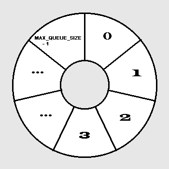

|
|
In this lab session we will study a data structure called a queue. This structure has many applications in computing such as holding files awaiting printer access.
A. Definition of Queue
B. Array Implementation of a Queue
C. "Circular Array" Implementation of a Queue
D. Linked List Implementation of a Queue
A. Definition of Queue
A queue is an abstract data type in which insertion occurs at one end (the rear)
and deletion occurs at the other end (the front). A queue is defined to hold one
type of data element. Only the elements indicated by front and rear can be
accessed. Thus a queue is a restricted access data structure similar to the
stack. Like a stack, the elements are related to each other by the order in
which they are placed on the queue.
An example of a queue is a line of people waiting at a ticket counter to buy a ticket. Whoever gets in line first gets a ticket first. A queue is a First In, First Out (FIFO) data storage mechanism. The storage structure that holds jobs for printing on a printer is typically a queue. When an operating system (OS) runs in batch mode (i.e. non-interactive), jobs to be processed are usually placed in a queue awaiting execution. However, sometimes the OS gives priority to smaller jobs in the queue, and if so, it becomes a "priority queue."
Insertion and deletion operations have special names in queues - insertion is called enqueue and deletion is called dequeue. A queue often serves as a "waiting line." Items put onto the queue (enqueued) come off (dequeued) in the same order. A queue, like a cafeteria line, has a front and a rear. Items are inserted at the rear of the queue and removed from the front of the queue.
B. Array Implementation of a Queue
First we demonstrate how the data in a Queue class can be implemented with an array, say elements[0..n-1], a counter nbrElts, and a pair of array indexes, frontIndx and rearIndx. The array could hold any type of data, even a record or a class type. In an array implementation of a queue nbrElts = 0 will mean the queue is empty. The data members nbrElts, frontIndx and rearIndx would each be initialized to 0 by a class constructor. To enqueue an element we store the new element at position rearIndx in the array and increment rearIndx unless the array is full. Thus code in the enqueue method might appear as:
//enqueue:
if (! full()) //full checks for nbrElts = n
{
elements[rearIndx] = newElement;
rearIndx++;
nbrElts++;
}
To dequeue an element we must first determine if the queue is empty. If the queue is not empty, we save the item at frontIndx and then increment frontIndx. Finally, we return the saved item to the calling function. The code in the dequeue method might appear as follows:
//dequeue:
if (!empty()) //empty checks for nbrElts = 0
{
frontElt = elements[frontIndx];
frontIndx++;
nbrElts--;
return frontElt;
}
As you can see, each enqueue operation advances rearIndx and nothing ever decreases it. Matters get worse as the queue is used. For instance, suppose n elements are enqueued and all are dequeued. We will have frontIndx = n , rearIndx = n and nbrElts = 0. Since nbrElts = 0 says the queue is empty, we could try to store something at elements[rearIndx] (that is elements[n]) but this slot does not exist in an array indexed from 0 to MAX_QUEUE_SIZE-1. To avoid this problem, we could copy each element in the queue to the next lower position each time a dequeue occurs, but this has a high cost of data movement and is not practical. We need a better solution.
C. "Circular" Array implementation of a Queue

In this situation, the queue indexes front and rear advance by moving them clockwise around the array. To achieve this, addition modulo n is used in the enqueue and dequeue operations described above. Thus, when rearIndx = MAX_QUEUE_SIZE - 1, the last position in the array, rearIndx is incremented by 1 as follows:
rearIndx = (rearIndx + 1) % n = (MAX_QUEUE_SIZE - 1 + 1 ) % MAX_QUEUE_SIZE = MAX_QUEUE_SIZE % MAX_QUEUE_SIZE = 0
A similar formula is used for frontIndx when dequeueing. The new enqueue and dequeue algorithms are as follows:
//(Circular array) enqueue:
D. Linked List Implementation of a Queue
Using a circular array implementation is physically limiting. As
was the case in a stack, it is sometimes difficult to determine the maximum
number of elements which a queue may need to contain. Thus we now consider the
linked list implementation of a queue. Assume that frontPtr and rearPtr are
pointers to the front and rear nodes in a linked representation of a queue. The
queue can now be visualized as in the following picture:
if (! full()) //full checks for nbrElts = MAX_QUEUE_SIZE
{
elements[rearIndx] = newElement;
rearIndx = (rearIndx + 1) % MAX_QUEUE_SIZE
nbrElts++; // update the number of elements
}
//(Circular array) dequeue:
if (!empty()) //empty checks for nbrElts = 0
{
frontElt = elements[frontIndx];
frontIndx = (frontIndx + 1) % MAX_QUEUE_SIZE
nbrElts--; // update the number of elements
return frontElt;
}
Exercise 3:
Suppose n=4, and you have a circular queue defined as above. Show
the array elements, the value of frontIndx, the value of rearIndx, the value
of nbrElts, and the value of item variable after all of the following operations have been completed:
q.enqueue(17);
q.enqueue(35);
item = q.dequeue()
q.enqueue(61);
q.enqueue(42);
item = q.dequeue();
q.enqueue(96);
item = q.dequeue();
Enqueueing means inserting a new node at the "end" of the list (where rearPtr points) and making rearPtr point at this new node, while dequeueing means deleting the node pointed to by frontPtr and resetting frontPtr. Both operations are straightforward. Here is the algorithm for the enqueue:
//(linked list)
enqueue:
Make p point at a new node
Copy new data into node p
Set p's pointer field to NULL
Set the link in the rear node to point to p
Set rearPtr = p
The definition for a queue implemented as a linked list is contained in the file inlab13.h and the implementation is contained in inlab13.cc. It uses a pointer to the first node (front) and the last node (rear) of the queue for dequeueing and enqueueing.
Exercise 6: Copy inlab13.h and inlab13.cc to your account. The code for the dequeue is missing from the implementation section of the queue. Complete the dequeue function.
Exercise 7: The code in main13.cc generates 100 random real numbers and enqueues some of them while using the others to request a dequeue. Add code to the program so you can determine the maximum size (length) the queue becomes in the process of generating the 100 random numbers. Display the maximum length. Turn in a listing of the modified source file, a compile and a run.
Exercise 8: Modify main13.cc to "generate 100 random real numbers ....." 25 times. Display the maximum length for each of the 25 runs, and calculate and print the average of the maximum lengths for the 25 times. If you were implementing the queue as an array, what size array would you feel comfortable using? Turn in a script file showing the new code and a run.